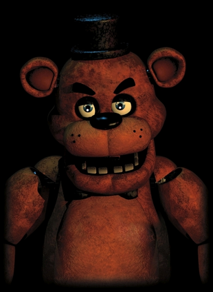

- Freddy Fazbear is the title antagonist of the Five Nights at Freddy's franchise, who later
appears as multiple variations in the succeeding games, and is the mascot of Freddy Fazbear's
Pizza. He is an animatronic bear who, like most of the animatronics in the games, is left in a
"free-roaming mode" at night, during which he wanders around Freddy Fazbear's Pizza, along with
the other animatronics, until 6 AM, to prevent their servos from locking up.
- Like the other animatronics, Freddy Fazbear will try to forcefully stuff any human he sees after hours into an animatronic suit, resulting in the death of the person in question. Secretly Freddy and the other animatronics are haunted by children murdered by a man named William Afton.
- Freddy is a brown animatronic bear with a light shade of brown on both his stomach and puffy muzzle. On stage, he wears a black top hat, black bow tie with a neck strap, and wields a microphone with his right hand. He has thick black eyebrows, three-toed feet, and three blackish freckles on both sides of his muzzle. From his palms and underneath his fingers he has what appears to be paw-like prints. His round ears are articulated and are thus able to move backwards and forward (similar to the ears of several other animatronics). Freddy sports squarish, human-like teeth from his lower jaw, and, like most of the animatronics at the pizzeria (except for Foxy), has no visible teeth on his upper jaw. His fur color, in Help Wanted, is more desaturated while the texture is more matted and scratchy, but has a more reflective shiny suit in Special Delivery as if made of different material.
- He has human handprints on the right side of his face and chin from the left (see picture above left), though they are difficult to locate. His irises are normally of a light, baby blue color, although, presumably for paranormal reasons, they become glossy-black when he is commonly seen on-camera and in one of his jumpscares, rather than his normal costume eyes. The only exceptions with him and his costume eyes are, in the group stare onstage, when he is coming down the East Hall, and when he is in the doorway when the power runs out. He and Foxy are the only two animatronics whose pupils glow white in the dark.
- As Withered Freddy, he is the older, withered incarnation first making an appearance in Five Nights at Freddy's 2 as the titular antagonist, as well as making a cameo appearance in Freddy Fazbear's Pizzeria Simulator and later returned in Five Nights at Freddy's VR: Help Wanted as an antagonist. He, along with the four other older animatronics have all fallen into severe disrepair and he is replaced by his newer counterpart for the "improved" Freddy Fazbear's Pizza, Toy Freddy. It is explained that he has gone through an attempted retrofit, but was left unfinished after the management chose to make Toy Freddy (much like the other original animatronics being replaced by their respective counterparts).[2] Out of all of the original animatronics, Withered Freddy seems to be the least damaged, with only a few tears through his body. This version of Freddy is later retrofitted and redesigned into the classic Freddy for the events of the first game.
- Like the other animatronics, Freddy Fazbear will try to forcefully stuff any human he sees after hours into an animatronic suit, resulting in the death of the person in question. Secretly Freddy and the other animatronics are haunted by children murdered by a man named William Afton.
Physical Appearance
Classic Freddy
- Freddy is a brown animatronic bear with a light shade of brown on both his stomach and puffy muzzle. On stage, he wears a black top hat, black bow tie with a neck strap, and wields a microphone with his right hand. He has thick black eyebrows, three-toed feet, and three blackish freckles on both sides of his muzzle. From his palms and underneath his fingers he has what appears to be paw-like prints. His round ears are articulated and are thus able to move backwards and forward (similar to the ears of several other animatronics). Freddy sports squarish, human-like teeth from his lower jaw, and, like most of the animatronics at the pizzeria (except for Foxy), has no visible teeth on his upper jaw. His fur color, in Help Wanted, is more desaturated while the texture is more matted and scratchy, but has a more reflective shiny suit in Special Delivery as if made of different material.
- He has human handprints on the right side of his face and chin from the left (see picture above left), though they are difficult to locate. His irises are normally of a light, baby blue color, although, presumably for paranormal reasons, they become glossy-black when he is commonly seen on-camera and in one of his jumpscares, rather than his normal costume eyes. The only exceptions with him and his costume eyes are, in the group stare onstage, when he is coming down the East Hall, and when he is in the doorway when the power runs out. He and Foxy are the only two animatronics whose pupils glow white in the dark.
Withered Freddy
- As Withered Freddy, he is the older, withered incarnation first making an appearance in Five Nights at Freddy's 2 as the titular antagonist, as well as making a cameo appearance in Freddy Fazbear's Pizzeria Simulator and later returned in Five Nights at Freddy's VR: Help Wanted as an antagonist. He, along with the four other older animatronics have all fallen into severe disrepair and he is replaced by his newer counterpart for the "improved" Freddy Fazbear's Pizza, Toy Freddy. It is explained that he has gone through an attempted retrofit, but was left unfinished after the management chose to make Toy Freddy (much like the other original animatronics being replaced by their respective counterparts).[2] Out of all of the original animatronics, Withered Freddy seems to be the least damaged, with only a few tears through his body. This version of Freddy is later retrofitted and redesigned into the classic Freddy for the events of the first game.

Alias
Withered Freddy
Occupation
Lead singer
Pizza Mascot
Pizza Mascot
Affiliation
Freddy Fazbear's Pizza
Owner
Fazbear Entertainment, Inc.
Voice Provider
Unknown
Mascot
Bear
Skin Color
Brown
Eye Color
Hazel-Blue
Gender
Male
Animatronic Set
Classics/Withereds
Freddy Fazbear as Withered Freddy
- Withered Freddy's overall appearance is unchanged, but small differences are visible - mainly
the buttons added to his chest, and a more visible stitching on the underside of his arms. Most
notably, however, is the damage on his arms similar to that of Foxy's, showing parts of his
endoskeleton. He also seems to be lacking kneecaps. Additionally, both of his knees are damaged;
with visible wires poking out of his left knee. His body segment is also smaller and his hat is
removable, as it is seen sitting on the floor next to him in the Parts/Service room. It should
be noted that he still holds a microphone. This time around, Withered Freddy has an upper set of
teeth, while his head appears far blockier. In addition to this, part of Freddy's endoskeleton
teeth are also slightly visible. His freckles are gone, his eyebrows are thinner, and he has
embossed inner ears. His eyes are in a slightly different position, meaning one of his eyes go
up and down, and also seem to have been placed deeper within the mask. Also, his muzzle appears
to be smaller and much rounder. The reason for his disrepair is due to neglect by the company
and the fact that he is simply used as spare parts for the newer animatronics. Withered Freddy's
pupils can sometimes be seen illuminating white glows.